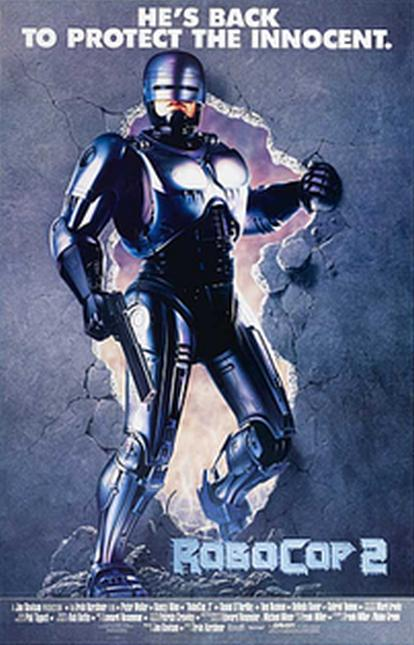

Comic Series: 23 issues (Marvel 1990 - 1992), RoboCop versus The Terminator (Dark Horse Comics, 1992), RoboCop 13 issues (Dark Horse Comics, 1992–1994), RoboCop 11 issues (Avatar Press, 2003–2006), RoboCop 14 issues (Dynamite Entertainment, 2009–2013), RoboCop 34 issues (Boom! Studios, 2013–2016)
RoboCop is a 1987 American cyberpunk action film directed by Paul Verhoeven and written by Edward Neumeier and Michael Miner. The film stars Peter Weller, Nancy Allen, Dan O'Herlihy, Kurtwood Smith, Miguel Ferrer, and Ronny Cox. Set in a crime-ridden Detroit, Michigan, in the near future, RoboCop centers on police officer Alex Murphy (Weller) who is murdered by a gang of criminals and subsequently revived by the megacorporation Omni Consumer Products (OCP) as a superhuman cyborg law enforcer known as RoboCop.

RoboCop 2 is a 1990 American cyberpunk action-superhero film directed by Irvin Kershner, written by Frank Miller and Walon Green, and starring Peter Weller, Nancy Allen, Dan O'Herlihy, Belinda Bauer, Tom Noonan and Gabriel Damon. Set in the near future in a dystopian metropolitan Detroit, Michigan. The film received mixed reviews from critics and fans. In 2013, the film received attention from news media due to its plot predicting Detroit filing for bankruptcy in the future.
RoboCop 3 is a 1993 American cyberpunk action-superhero film directed by Fred Dekker and written by Frank Miller and Dekker. The film is the third and final installment of the original RoboCop trilogy. Set in the near future in a dystopian metropolitan Detroit, Michigan, RoboCop 3 follows RoboCop (Robert John Burke) as he vows to avenge the death of his partner Anne Lewis (Nancy Allen) and tries to save Detroit from falling into chaos.
RoboCop is a 2014 American cyberpunk superhero action film directed by José Padilha and written by Joshua Zetumer, Nick Schenk, Edward Neumeier and Michael Miner. It is a remake of the 1987 film of the same name also written by Neumeier and Miner. The film stars Joel Kinnaman as the title character, with Gary Oldman, Michael Keaton, Samuel L. Jackson, Abbie Cornish and Jackie Earle Haley in supporting roles.
Themes that make up the basis of RoboCop include media influence, gentrification, corruption, authoritarianism, greed, privatization, capitalism, identity, dystopia and human nature. It received positive reviews and was cited as one of the best films of 1987, spawning a franchise that included merchandise, two sequels, a television series, a remake, two animated TV series, a television mini-series, video games, and a number of comic book adaptations/crossovers.
The film was produced for a relatively modest $13 million. Honors for the film include five Saturn Awards, two BAFTA Award nominations and the Academy Award for Best Sound Editing, along with nominations for Best Film Editing and Best Sound Mixing.